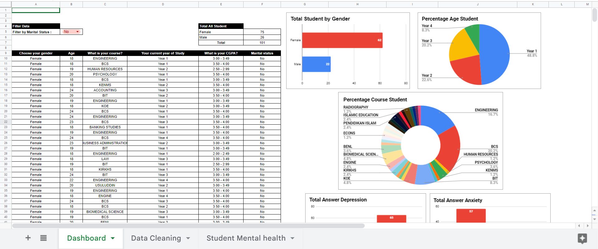
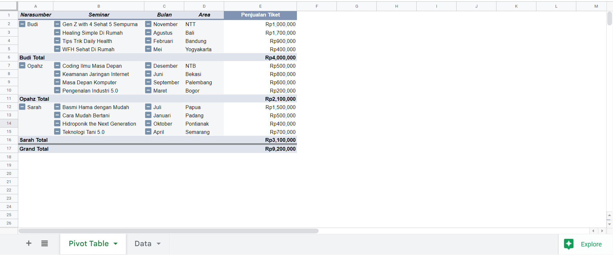
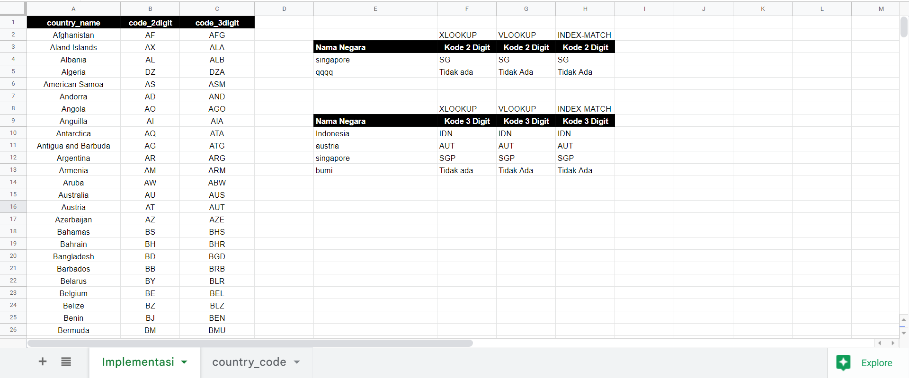
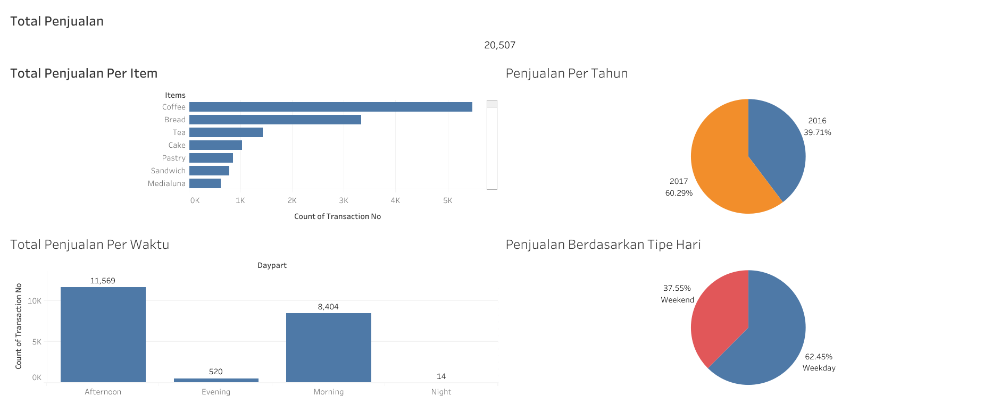
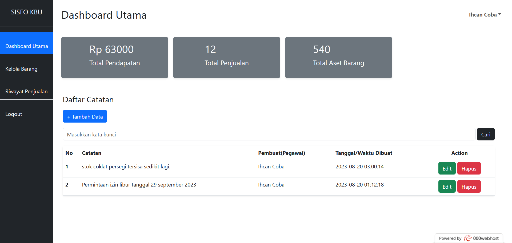

Dashboard Student Mental Health
Tools : Kaggle, Google Sheets

Dashboard Student Mental Health adalah sebuah project membuat dashboard data dengan dataset yang didapat dari Kaggle
(https://www.kaggle.com/datasets/shariful07/student-mental-health).
Dataset yang digunakan berisi data-data tentang kesehatan mental mahasiswa dari berbagai umur, jurusan, tahun studi, dan lain-lain.
Data tersebut kemudian diolah menggunakan Online Spreadsheet yakni Google Sheets dengan berbagai tahapan seperti
data cleaning, merapikan data, dan lain-lain, sehingga dihasilkan sebuah dashboard yang siap untuk dipakai.
Pada Dashboard tersebut, terdapat filter data mahasiswa berdasarkan status pernikahan, kemudian tabel jumlah total semua mahasiswa dan juga berdasarkan gender/jenis kelamin,
terdapat juga berbagai macam grafik seperti Grafik Pie Percentage Age Student yang bisa digunakan untuk mengetahui persentase tahun studi mahasiswa, Grafik Bar Total Student by Gender yang bisa digunakan untuk mengetahui total mahasiswa berdasarkan gender/jenis kelamin,
kemudian Grafik Pie Percentage Course Student yang bisa digunakan untuk mengetahui persentase jurusan mahasiswa, dan grafik lainnya.
Data grafik tersebut tentunya bisa berubah sesuai dengan filter status pernikahan(marital status) yang diterapkan. Kunjungi Project
Kelola Data dengan Pivot Table
Tools : Google Sheets

Project ini merupakan salah satu latihan bagaimana mengelola dan memvisualisasikan data dengan menggunakan fitur pivot table,
adanya pivot table mampu membuat dan memvisualisasikan data menjadi bentuk tabel sehingga lebih rapi, enak untuk dibaca, dan lain-lain tanpa perlu mengetikkan formula - formula
seperti SUM, COUNT, AVERAGE, dan lainnya.
Pada project ini, data yang digunakan merupakan data fake/dummy buatan saya sendiri, data tersebut kemudian saya olah menjadi bentuk pivot table dengan 5 kolom yakni
Narasumber, Seminar, Bulan, Area, dan Penjualan Tiket .
Pada data yang digunakan terdapat 3 narasumber dengan topik seminar, bulan, area, dan penjualan tiket yang sudah diatur
oleh pivot table, masing-masing total penjualan tiket dari tiap narasumber juga dikelola oleh pivot table. Selain itu juga, jumlah total keseluruhan penjualan tiket juga bisa diketahui dengan menggunakan pivot table.
Kunjungi Project
Country Codes dengan Xlookup, Vlookup, Index-Match
Tools : Kaggle, Google Sheets

Project ini merupakan project latihan saya bagaimana menggunakan Xlookup, Vlookup, dan Index-Match guna untuk mencari dan menemukan data berdasarkan kriteria tertentu.
Dataset yang digunakan didapat dari Kaggle (https://www.kaggle.com/datasets/koki25ando/country-code).
Dataset tersebut kemudian saya olah menggunakan Online Spreadsheet yakni Google Sheets dan melakukan berbagai tahapan seperti salah satunya data cleaning guna untuk mengambil isi dataset yang diperlukan saja.
Xlookup, Vlookup, dan Index-Match merupakan formula yang dapat digunakan untuk mencari dan menemukan data sesuai dengan kriteria terentu (dalam kasus ini, mencari kode negara sesuai dengan kriteria nama negara).
Perbedaan antara ketiganya yakni Xlookup mampu mencari dan menemukan data baik posisi kolom di sebelah kiri maupun sebelah kanan dari kolom data asal kata kunci pencarian (country_name),
selain itu, terdapat juga validasi yang bisa digunakan apabila data tidak ditemukan (dalam kasus ini, muncul kata "Tidak Ada" apabila data tidak ditemukan) tanpa harus menggunakan formula tambahan misalnya IFERROR.
Selanjutnya ada Vlookup yang mampu mencari dan menemukan data yang berada di posisi kolom sebelah kanan saja dari kolom data asal kata kunci pencarian (country_name) yang digunakan.
Pada contoh project ini, data yang hanya bisa ditemukan hanya berupa kode 2 digit atau 3 digit saja, sedangkan apabila ingin menemukan nama negara dengan kata kunci pencarian kode
negara (code_2digit/code_3digit) itu tidak bisa dilakukan karena kolom data nama negara (country_name) berada di sebelah kiri dari kolom data kode negara 2 digit (code_2digit) dan 3 digit (code_3digit).
Selain itu, jika ingin adanya validasi apabila data tidak ditemukan, maka perlu adanya formula tambahan misalnya IFERROR.
Terakhir, ada Index-Match yang merupakan gabungan dari formula Index dan Match, dengan menggunakan gabungan kedua formula tersebut, dapat dilakukan pencarian data baik posisi kolom berada di sebelah kiri ataupun kanan dari kolom data asal kata kunci pencarian (country_name),
ini mirip seperti fungsi Xlookup, akan tetapi penggunaan Index-Match tidak terdapat validasi apabila data tidak ditemukan. Selain itu, penggunaan 2 formula sekaligus, menurut saya kurang efisien. Kunjungi Project
Dashboard Bakery Sales
Tools : Kaggle, Google Sheets, Tableau Public

Dashboard Bakery Sales adalah sebuah project membuat dashboard data dengan dataset yang didapat dari Kaggle (https://www.kaggle.com/datasets/akashdeepkuila/bakery).
Dataset ini kemudian saya kelola menggunakan Online Spreadsheet yakni Google Sheets dengan berbagai tahapan seperti
data cleaning, merapikan data, dan lain-lain, sehingga dihasilkan sebuah data yang siap untuk digunakan/dimasukkan ke Aplikasi Tableau Public.
Data yang telah dimasukkan ke dalam Aplikasi Tableau Public ini, kemudian saya olah untuk membuat visualisasi datanya. Ada 5 informasi data yang tersaji pada dashboard ini
yakni Total Penjualan, Total Penjualan Per Item, Penjualan Per Tahun, Total Penjualan Per Waktu, dan Penjualan Berdasarkan Tipe Hari.
Informasi Total Penjualan berisikan data total semua transaksi yang pernah dilakukan yakni berjumlah 20.507 transaksi.
Kemudian, grafik bar Total Penjualan Per Item berisikan informasi total masing-masing item yang telah dibeli, terlihat pada gambar diatas bahwa yang paling banyak dibeli adalah kopi.
Selanjutnya, grafik pie Penjualan Per Tahun berisikan informasi tentang penjualan dalam hitungan tahun, terlihat di tahun 2017 persentase penjualan lebih banyak dibanding tahun 2016.
Terdapat juga grafik bar Total Penjualan Per Waktu yang berisi informasi total penjualan berdasarkan waktu pagi, siang, sore, dan malam.
Terakhir, terdapat grafik pie Penjualan Berdasarkan Tipe Hari yang berisi informasi penjualan berdasarkan tipe hari weekend atau weekday. Kunjungi Project
Sistem Informasi Kelola Barang Usaha
Tools : Laravel, Bootstrap, PHP, lain-lain

Sistem Informasi Kelola Barang Usaha adalah Website yang yang berfungsi sebagai sistem informasi pengelolaan produk atau barang - barang usaha. Project website ini dibuat dengan menggunakan Laravel framework, Bootstrap, dan lain-lain.
Silahkan lakukan proses login terlebih dahulu dengan menggunakan email : ihsanican20@coba.com dan password : qwerty321 , setelah itu akan diarahkan ke halaman dashboard website.
Pada halaman dashboard, terdapat beragam fitur seperti navigasi ke halaman lain, fitur logout, melihat analisa/statistik total pendapatan, penjualan, dan aset barang/produk. Selain itu, ada juga fitur catatan,
kemudian di halaman kelola barang, pengguna dapat melakukan proses kelola produk/barang usaha seperti menambahkan, mengedit, menghapus, dan mencari barang/produk.
Selain itu, sistem juga sudah dilengkapi dengan fitur paginasi/pagination sehingga data - data yang ditampilkan menjadi rapi dan tidak terlalu banyak saat dimunculkan.
Lanjut ke halaman riwayat penjualan, halaman ini merupakan halaman dimana pengguna bisa mengelola produk/barang yang telah terjual, namun pada bagian ini, pengguna tidak
bisa menambahkan dan mengedit data, akan tetapi pengguna tetap bisa menghapus data yang sudah ada.
Alur penggunaan/ Use case dari sistem ini adalah terdapat dua aktor yakni admin owner dan pegawai.
Admin owner merupakan aktor pemilik usaha dan dapat melakukan tugas seperti mengelola website, mengelola semua catatan dari pegawai yang ada, memantau statistik, dan mengelola aset barang/produk, serta kelola riwayat penjualan.
Sedangkan aktor pegawai, dapat melakukan tugas seperti membuat, mengedit, menghapus catatan milik sendiri, melihat statistik, mengelola aset barang/produk, dan mengelola riwayat penjualan.
Sistem ini dapat berfungsi seutuhnya apabila terdapat aplikasi/sistem kasir yang terhubung ke database yang sama pada website ini. Sehingga alur penggunaan secara sederhana yakni pegawai bagian kasir
menginput barang/produk yang dibeli oleh konsumen ke aplikasi kasir, kemudian aplikasi memproses data dan mengupdate data untuk kemudian diberikan ke website sisfo kelola barang usaha,
sehingga website mendapatkan data baru untuk ditampilkan misalnya di halaman riwayat penjualan, statistik total pendapatan, total penjualan, dan lain-lain.
Kunjungi Project